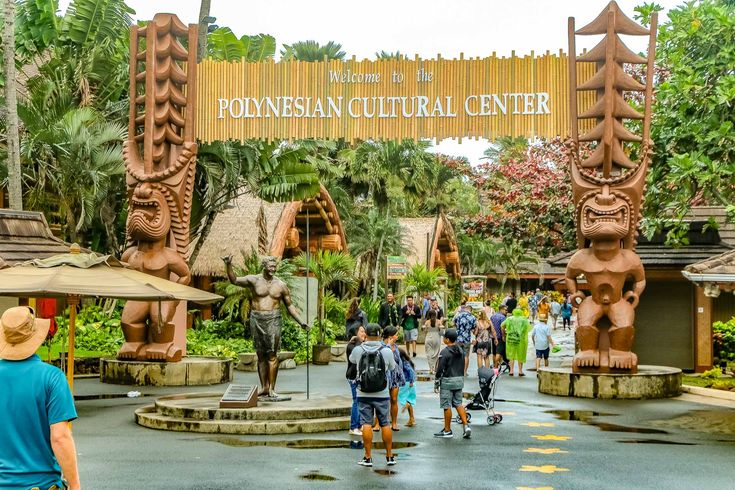
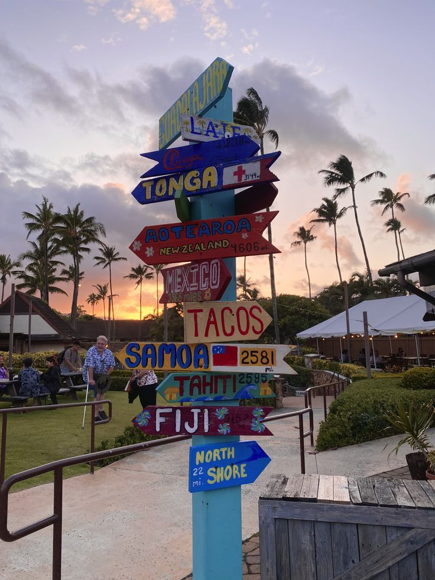

The Polynesian Cultural Center is an immersive attraction in Laie, Hawaii, that showcases the rich traditions and customs of the Pacific Islands.
The Polynesian Cultural Center is a popular destination for both locals and tourists seeking to experience the rich cultural heritage of the Pacific Islands. The center features traditional performances, interactive exhibits, and authentic cuisine that provide visitors with an immersive look into the customs and traditions of the region.

